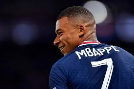
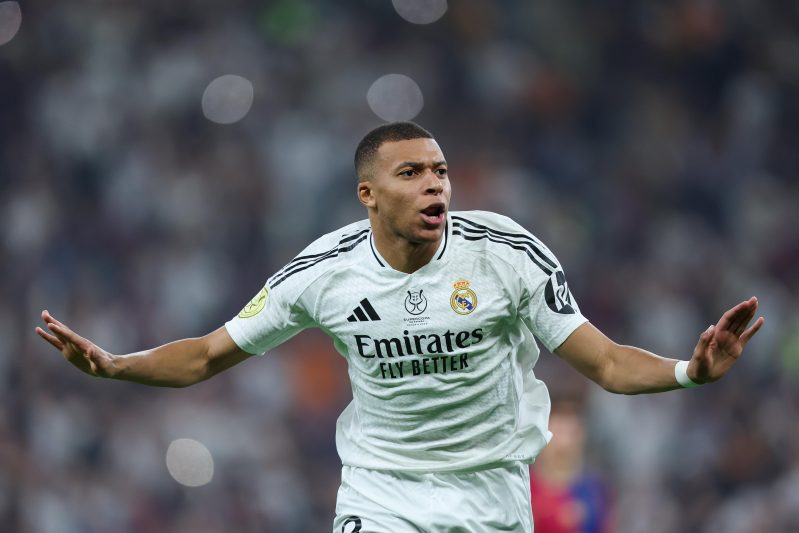

The story of Kylian Mbappe, The French Speedster

French forward in PSG
Kylian Mbappé joined Paris Saint-Germain in 2017 and quickly became the club's star forward. Known for his explosive pace and clinical finishing, he led PSG to multiple Ligue 1 titles. He formed a formidable attack alongside Neymar and Messi during his tenure. Despite transfer rumors, Mbappé remained PSG's talisman until his likely 2024 exit.

Move to Real Madrid
In 2024, Kylian Mbappé finally made his long-anticipated move to Real Madrid. The transfer marked a new era for both club and player, fulfilling a childhood dream. He joined a star-studded squad aiming for continued European dominance. Madrid sees him as the long-term successor to their legendary Galácticos.